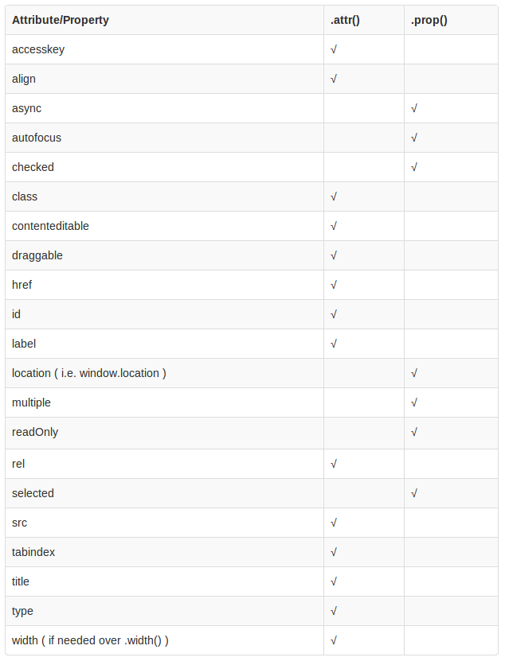

remove()和empty()
remove('selector')删除被选元素（及其子元素），该方法不会把匹配的元素从 jQuery 对象中删除，因而可以在将来再使用这些匹配的元素。empty()从被选元素中删除子元素。
JQuery event对象
该对象主要用于获取事件的相关信息，或对该事件进行处理。
1 | //触发事件时的event对象 |
event属性
| 属性 | 描述 |
|---|---|
| currentTarget | 返回事件冒泡阶段中的当前DOM元素 |
| data | 返回绑定事件时传入的附加数据 |
| delegateTarget | 返回”受委托”调用当前事件处理函数的DOM元素 |
| namespace | 返回触发事件时指定的命名空间 |
| pageX | 返回鼠标相对于当前文档的x坐标 |
| pageY | 返回鼠标相对于当前文档的y坐标 |
| result | 返回当前事件绑定的上一个事件处理函数的返回值。 |
| target | 最初触发该事件的DOM元素 |
| timeStamp | 返回事件触发的当前时间与1970年1月1日午夜之间的毫秒数 |
| type | 返回事件的类型。例如:”click”、”focus”等 |
| which | 返回触发事件时按下的鼠标按钮或键盘按键 |
event方法
|方法|描述|
|isDefaultPrevented()|是否调用了preventDefault()方法。|
|isImmediatePropagationStopped()|是否调用了stopImmediatePropagation()方法。|
|isPropagationStopped()|是否调用了stopPropagation()方法。(阻止当前事件在DOM树上冒泡。)|
|preventDefault()|阻止触发事件的默认行为。|
|stopImmediatePropagation()|阻止该元素当前触发事件剩余的事件处理函数的执行，并停止事件的冒泡传递。|
|stopPropagation()|停止事件的冒泡传递。|
event.which属性
鼠标事件
| event.which属性值 | 对应的鼠标按钮 |
|---|---|
| 1 | 鼠标左键 |
| 2 | 鼠标中键(滚轮键) |
| 3 | 鼠标右键 |
键盘事件
| which属性值(或范围) | 对应的键盘按键 |
|---|---|
| 8 | Backspace键 |
| 9 | Tab键 |
| 13 | Enter键 |
| 16 | Shift键 |
| 17 | Ctrl键 |
| 20 | Alt键 |
| 20 | Caps Lock键(大小写锁定) |
| 27 | Esc键 |
| 33 - 36 | 对应按键 PageUp、PageDown、End、Home |
| 37 - 40 | 对应按键 左、上、右、下(方向键) |
| 45 - 46 | 对应按键 Insert、Delete |
| 48 - 57 | 对应按键 0 - 9(非小键盘) |
| 65 - 90 | 对应按键 A - Z |
| 91 | Windows键 |
| 96 - 105 | 对应按键 0 - 9(小键盘) |
| 106、107、109、110、111 | 对应按键*、+、-、.、/(小键盘) |
| 112 - 123 | 对应按键 F1 - F12 |
JQuery $()选择器
…
JQuery 添加DOM元素
- append() - 在被选元素内部的结尾插入内容
- prepend() - 在被选元素内部的开头插入内容
- after() - 在被选元素之后插入内容
- before() - 在被选元素之前插入内容
如何取出下拉框select标签选中的项
html
1 | <!-- option的value是传到服务器端的值 --> |
javascript
1 | // .change()在下拉框内容选项改变时触发。 |
关于jQuery attr()和prop()
如果要获取元素只有 true 和 false 属性的attribute值，例如checked, selected 或者 disabled 使用prop()，其他则用attr()，具体见下表。

on(),bind(),live()和delegate()的差异
bind()方法只能给当前存在的元素绑定事件。对于后来通过操作js动态添加的DOM元素，则不起作用。
live()和delegate()方法不仅作用于DOM中当前存在的元素，还作用于将来可能存在（动态生成）的元素。而且由于live()绑定事件的源头是document,而delegate()绑定时间的源头是object（具体对象），所以delegate()效率比live()高。
- 用on()绑定事件处理函数，可以使用off()取消事件绑定。
- 用bind()绑定事件处理函数，可以使用unbind()取消事件绑定。
- 用live()绑定事件处理函数，可以使用die()取消事件绑定。
- 用delegate()绑定事件处理函数，可以使用undelegate()取消事件绑定。
.delegate()
1 | .delegate('selector', 'eventType', function(event) { |
selector选择器字符串，用于过滤器触发事件的元素。eventType一个包含一个或多个用空格隔开的JavaScript事件类型的字符串，比如”click”或”keydown,”或自定义事件的名称。
.on()
1 | .on( events [, selector ] [, data ], handler(eventObject) ){ |
event一个或多个空格分隔的事件类型和可选的命名空间，或仅仅是命名空间，比如”click”, “keydown.myPlugin”, 或者 “.myPlugin”。selector一个选择器字符串data当一个事件被触发时，要传递给事件处理函数的event.datahandler(eventObject)事件被触发时，执行的函数。若该函数只是要执行return false的话，那么该参数位置可以直接简写成 false。
在jQuery 3.0中，.delegate()已被标记为弃用。从jQuery 1.7开始，它已经被.on()方法取代。所以我们不建议使用该方法。
.one()
元素的事件添加处理函数。处理函数在每个元素上每种事件类型最多执行一次。
1 | .one( events [, selector ] [, data ], handler(eventObject) ){ |
.one()和.on()是相同的， 不同之处在于，对于给定的元素和事件类型，处理程序在第一次触发事件后会被立即解除绑定- 如果该方法的第一个参数包含多个用空格分隔的事件类型的话，那么每种类型的事件被触发时，处理函数仅会被每个事件类型调用一次。
.trigger()
1 | .trigger( eventType [, extraParameters ] ){ |
extraParameters传递给事件处理程序的额外参数。当相应的事件发生时，任何通过
.on()或一个快捷方法绑定的事件处理程序将被触发。它们也可以用.trigger()方法手动触发。调用.trigger()执行处理程序和用户自然的触发该事件，他们的执行顺序时相同的：.trigger()事件会在DOM树上冒泡;在事件处理程序中返回false或调用事件对象中的.stopPropagation()方法可以使事件停止冒泡。
若要触发通过 jQuery 绑定的事件处理函数，而不触发原生的事件，使用.triggerHandler() 来代替。
.triggerHandler()
为一个事件执行附加到元素的所有处理程序。
1 | .triggerHandler( eventType [, extraParameters ] ){ |
.triggerHandler( "event" )方法被触发时不会调用元素上的.event()。 这意味着在表单上触发.triggerHandler( "submit" )将不会调用表单上的.submit()。- 使用
.triggerHandler()触发的事件，并不会在 DOM 树中向上冒泡。
readonly和disabled区别
Readonly和Disabled是用在表单中的两个属性，它们都能够做到使用户不能够更改表单域中的内容。但是它们之间有着微小的差别
- Readonly 只针对 input(text / password) 和 textarea 有效
- disabled 对于所有的表单元素都有效，包括 select, radio , checkbox , button 等
- 表单元素在使用了disabled后，当我们将表单以 POST*或 *GET 的方式提交的话，这个元素的值不会被传递出去
- readonly 会将该值传递出去
在某个表单中为用户预填了某个唯一识别代码，不允许用户改动，但是在提交时需要传递该值，此时应该将它的属性设置为 readonly。
设置disabled属性的方式
1 | <input type="text" daisbaled="disabled"> |
1 | $('input').attr("disabled",true)//将input元素设置为disabled |
设置readonly属性的方式
1 | <input type="text" readonly="readonly"> |
1 | $('input').removeAttr("readonly");//去除input元素的readonly属性 |